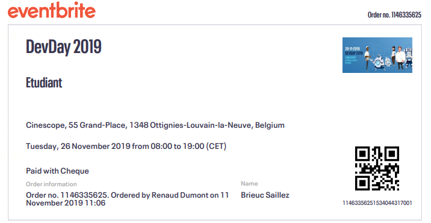
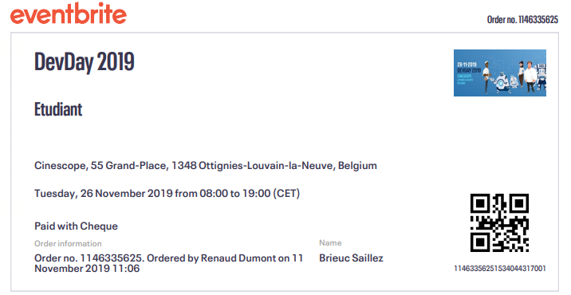

Portfolio
| Thème | Type d'activité | Lieu | Dates | Temps consacrés | Heures valorisées | Détails |
|---|---|---|---|---|---|---|
| Voyage à Malte | Voyage linguistique | Malte | Du 23/09/2019 au 26/09/2019 | 3 jours | 10h |
|
| Devday, présentation d'Odoo | Conférence | Cinéscope de Louvain-La-Neuve, Ephec Louvain-La-Neuve | Le 26/11/2019, Le 07/11/2018 | 7h30 | 7h30 |
|
| Journée porte ouverte | Présentation | Ephec Louvain-La-Neuve | Le 27/03/2019 | 2h30 | 2h30 |
|
| Joueur de l'équipe e-sport Rocket League de l'Ephec | E-sport | - | Du 15/09/2019 au 15/03/2020 | 25h | 10h |
|
| Création d'un bot discord | Développement | - | Du 08/07/2019 au 18/01/2020 | 50h | 10h |

|
| OpenClassRoom : Apprenez ASP.net MVC | Formation en ligne | "OpenClassRoom" | Le 22/02/2020 | 30h | 10h |

|
| Openclassroom : Réalisez une application web avec React.js | Formation en ligne | "OpenClassRoom" | Le 24/03/2020 | 20h | 10h |
|
| Total | 207h | 60h |
Note : Cliquer sur l'image dans la colonne détails vous permet d'avoir plus de détails sur les activités
 
